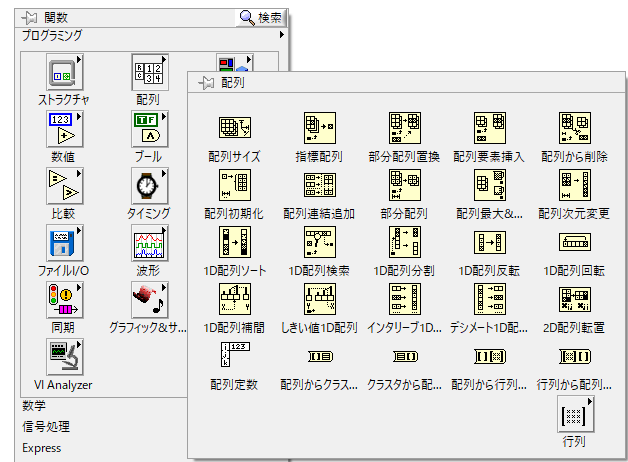
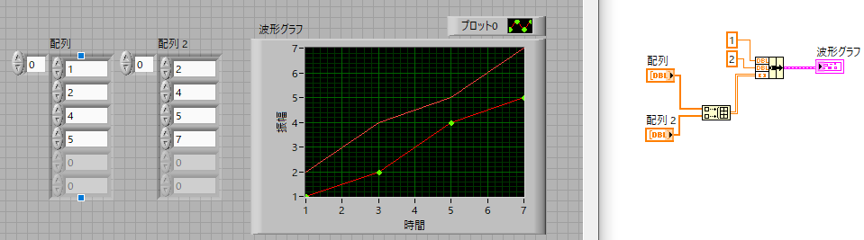
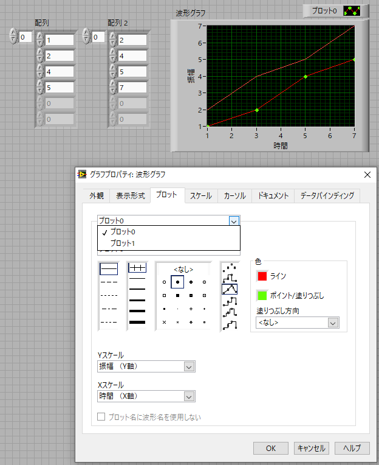

波形グラフ-03
複数のデータを一つのグラフに描くときに必要なアイコンは，
配列 → 配列連結追加

です．
配列ウィンドウの2行目，2列目にありますね．
配列連結追加アイコンを設置して，二つ目のデータを作成しましょう．
初期状態では，配列連結追加アイコンは入力が1つしかないので，下に広げて2つにしましょう．
それぞれにデータを結線しましょう．

配列連結追加アイコンの右側の出力をバンドルアイコンの一番下に結線すると，オレンジの二重線になることがわかります．
これは，二次元配列を意味します．
実行してみると上図のように，二つのデータがプロットされていることがわかります．
ここで，重要な点は，
複数のデータの横軸の値は同じ
であることです．
それぞれのプロットのデザインを変更したい場合は，
フロントパネル → グラフを右クリック →プロット
で”プロット０”の右の下三角をクリックすると，
プロット０
プロット１
と出てきますので，目的のプロットを指定して修正してください．
．


，